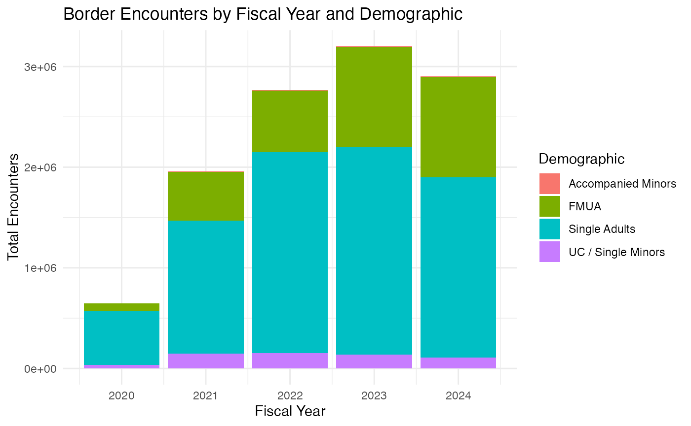
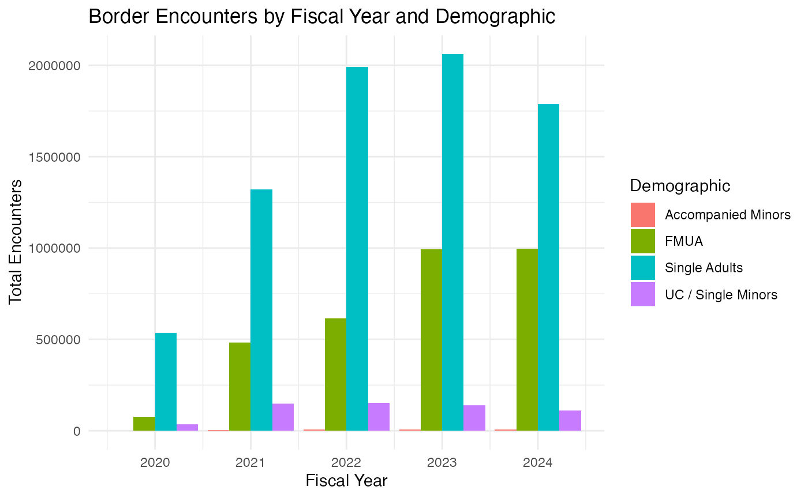

CBP Data Analysis
etc5523-assignment-supp.Rmd
library(dplyr)
#> Error in get(paste0(generic, ".", class), envir = get_method_env()) :
#> object 'type_sum.accel' not found
#>
#> Attaching package: 'dplyr'
#> The following objects are masked from 'package:stats':
#>
#> filter, lag
#> The following objects are masked from 'package:base':
#>
#> intersect, setdiff, setequal, union
library(ggplot2)
library(tidyverse)
#> ── Attaching core tidyverse packages ──────────────────────── tidyverse 2.0.0 ──
#> ✔ forcats 1.0.0 ✔ stringr 1.5.1
#> ✔ lubridate 1.9.3 ✔ tibble 3.2.1
#> ✔ purrr 1.0.2 ✔ tidyr 1.3.1
#> ✔ readr 2.1.5
#> ── Conflicts ────────────────────────────────────────── tidyverse_conflicts() ──
#> ✖ dplyr::filter() masks stats::filter()
#> ✖ dplyr::lag() masks stats::lag()
#> ℹ Use the conflicted package (<http://conflicted.r-lib.org/>) to force all conflicts to become errors
install.packages(c("rmarkdown", "knitr", "dplyr", "ggplot2", "readr"))
#> Installing packages into '/private/var/folders/g_/00fzszrn60gfpg24419wdjr00000gn/T/RtmpkJ9Dqi/temp_libpath6d0419e90d8'
#> (as 'lib' is unspecified)
#>
#> The downloaded binary packages are in
#> /var/folders/g_/00fzszrn60gfpg24419wdjr00000gn/T//Rtmp6VPfhv/downloaded_packagesIntroduction
This vignette analyzes U.S. Customs and Border Protection (CBP) data to explore trends in border encounters by fiscal year and demographic characteristics. The focus is on identifying patterns in encounter counts over time and across regions.
Methods
To understand US Customs and Border Protection (CBP) encounter data, we utilized two core datasets, cbp_resp and cbp_state. The cbp_resp dataset details encounters with different demographics in each fiscal year, while the cbp_state dataset aggregates the total number of encounters by state. These two data sets provide a wealth of information for analysis, helping to reveal key temporal trends and geographic distribution patterns.
First, we loaded the data and conducted an exploratory analysis of its contents, checking the data for completeness and accuracy. Next, we completed the following work in the data preprocessing stage: Grouping cbp_resp data by fiscal year and demographic characteristics, and calculating the total number of encounters for each group; The cbp_state data were grouped by state to calculate the total number of encounters in each state. In addition, we ensure the reliability of statistical results by removing missing values (na.rm = TRUE) during calculation.
To make the data more intuitive, we designed two visualizations: The first is a bar chart that shows encounter trends by fiscal year and demographic characteristics; The second is a horizontal bar chart that compares the total number of encounters by state. These charts clearly show the distribution patterns of time and space and provide strong support for the analysis.
# Load data
cbp_resp <- readr::read_csv('https://raw.githubusercontent.com/rfordatascience/tidytuesday/main/data/2024/2024-11-26/cbp_resp.csv')
#> Rows: 68815 Columns: 12
#> ── Column specification ────────────────────────────────────────────────────────
#> Delimiter: ","
#> chr (10): month_grouping, month_abbv, component, land_border_region, area_of...
#> dbl (2): fiscal_year, encounter_count
#>
#> ℹ Use `spec()` to retrieve the full column specification for this data.
#> ℹ Specify the column types or set `show_col_types = FALSE` to quiet this message.
cbp_state <- readr::read_csv('https://raw.githubusercontent.com/rfordatascience/tidytuesday/main/data/2024/2024-11-26/cbp_state.csv')
#> Rows: 54939 Columns: 9
#> ── Column specification ────────────────────────────────────────────────────────
#> Delimiter: ","
#> chr (7): month_grouping, month_abbv, land_border_region, state, demographic,...
#> dbl (2): fiscal_year, encounter_count
#>
#> ℹ Use `spec()` to retrieve the full column specification for this data.
#> ℹ Specify the column types or set `show_col_types = FALSE` to quiet this message.
# Preview datasets
head(cbp_resp)
#> # A tibble: 6 × 12
#> fiscal_year month_grouping month_abbv component land_border_region
#> <dbl> <chr> <chr> <chr> <chr>
#> 1 2020 FYTD APR Office of Field Oper… Northern Land Bor…
#> 2 2020 FYTD APR Office of Field Oper… Northern Land Bor…
#> 3 2020 FYTD APR Office of Field Oper… Northern Land Bor…
#> 4 2020 FYTD APR Office of Field Oper… Northern Land Bor…
#> 5 2020 FYTD APR Office of Field Oper… Northern Land Bor…
#> 6 2020 FYTD APR Office of Field Oper… Northern Land Bor…
#> # ℹ 7 more variables: area_of_responsibility <chr>, aor_abbv <chr>,
#> # demographic <chr>, citizenship <chr>, title_of_authority <chr>,
#> # encounter_type <chr>, encounter_count <dbl>
head(cbp_state)
#> # A tibble: 6 × 9
#> fiscal_year month_grouping month_abbv land_border_region state demographic
#> <dbl> <chr> <chr> <chr> <chr> <chr>
#> 1 2020 FYTD APR Northern Land Border ID Single Adults
#> 2 2020 FYTD APR Northern Land Border ME Single Adults
#> 3 2020 FYTD APR Northern Land Border ME Single Adults
#> 4 2020 FYTD APR Northern Land Border ME Single Adults
#> 5 2020 FYTD APR Northern Land Border ME Single Adults
#> 6 2020 FYTD APR Northern Land Border ME Single Adults
#> # ℹ 3 more variables: citizenship <chr>, title_of_authority <chr>,
#> # encounter_count <dbl>
# Summary of data
summary(cbp_resp)
#> fiscal_year month_grouping month_abbv component
#> Min. :2020 Length:68815 Length:68815 Length:68815
#> 1st Qu.:2021 Class :character Class :character Class :character
#> Median :2022 Mode :character Mode :character Mode :character
#> Mean :2022
#> 3rd Qu.:2023
#> Max. :2024
#> land_border_region area_of_responsibility aor_abbv
#> Length:68815 Length:68815 Length:68815
#> Class :character Class :character Class :character
#> Mode :character Mode :character Mode :character
#>
#>
#>
#> demographic citizenship title_of_authority encounter_type
#> Length:68815 Length:68815 Length:68815 Length:68815
#> Class :character Class :character Class :character Class :character
#> Mode :character Mode :character Mode :character Mode :character
#>
#>
#>
#> encounter_count
#> Min. : 0.0
#> 1st Qu.: 2.0
#> Median : 9.0
#> Mean : 166.7
#> 3rd Qu.: 57.0
#> Max. :25457.0
# Summarize data by fiscal year and demographic
summary_data <- cbp_resp %>%
group_by(fiscal_year, demographic) %>%
summarise(total_encounters = sum(encounter_count, na.rm = TRUE)) %>%
arrange(desc(total_encounters))
#> `summarise()` has grouped output by 'fiscal_year'. You can override using the
#> `.groups` argument.
# Plot data
ggplot(summary_data, aes(x = fiscal_year, y = total_encounters, fill = demographic)) +
geom_bar(stat = "identity") +
theme_minimal() +
labs(
title = "Border Encounters by Fiscal Year and Demographic",
x = "Fiscal Year",
y = "Total Encounters",
fill = "Demographic"
) # Results # Overall Trends by Fiscal Year General Trends: Annual changes in border encounters
Analysis of cbp_resp data reveals significant changes in the total number of border encounters between fiscal years, as well as trends in the distribution of encounters across different demographic characteristics. Specifically, the overall number of encounters increased significantly in some fiscal years, a phenomenon that could be related to policy changes or global migration trends. For example, in some years, the number of encounters with unaccompanied children (UC) has risen rapidly, indicating the particular vulnerability of this group in particular policy contexts. At the same time, the number of recorded encounters of family unit members (FMUA) and adults (single persons) is relatively stable, making up the majority of border encounters.
We can see these trends intuitively by looking at the bar chart. The data showed that the number of encounters with unaccompanied children increased rapidly in a given year, while the trend for family unit members was more flat. These changes can be influenced by a number of factors, such as changes in border enforcement policies or seasonal changes in migration flows.
# Plot total encounters by fiscal year and demographic
ggplot(summary_data, aes(x = fiscal_year, y = total_encounters, fill = demographic)) +
geom_bar(stat = "identity", position = "dodge") +
theme_minimal() +
labs(
title = "Border Encounters by Fiscal Year and Demographic",
x = "Fiscal Year",
y = "Total Encounters",
fill = "Demographic"
) #Encounter Counts by State State distribution: Ranking of border encounters by state
In the analysis of cbp_state data, we found significant regional differences in the geographical distribution of border encounters. Texas’ total number of encounters was much higher than other states, showing its importance as a major border state. This phenomenon may be driven by its long border with Mexico and the concentration of its migrant flows. In addition, California and Arizona also occupy high positions in the total number of encounters, further demonstrating the central role of southern border states in immigration management.
On the other hand, some non-border states also show a higher record of encounters. These states may host significant immigration detention facilities or receive large numbers of migrants transferred from border states. This phenomenon reflects the fact that the management of migration is not only a problem in border areas, but also involves the coordination and implementation of policies within countries more broadly.
The horizontal bar chart clearly shows the number of encounters by state. As you can see from the chart, Texas ranks first by a wide margin, while other southern border states are close behind. These data provide valuable insights into the geographical distribution of migration flows and provide a basis for studying the migration management needs of different states.
# Summarize total encounters by state
state_summary <- cbp_state %>%
group_by(state) %>%
summarise(total_encounters = sum(encounter_count, na.rm = TRUE)) %>%
arrange(desc(total_encounters))
# Plot total encounters by state
ggplot(state_summary, aes(x = reorder(state, -total_encounters), y = total_encounters)) +
geom_bar(stat = "identity", fill = "steelblue") +
coord_flip() +
theme_minimal() +
labs(
title = "Total Encounters by State",
x = "State",
y = "Total Encounters"
)
print(state_summary)
#> # A tibble: 48 × 2
#> state total_encounters
#> <chr> <dbl>
#> 1 TX 5194011
#> 2 AZ 2106917
#> 3 CA 1757449
#> 4 FL 595699
#> 5 NM 589868
#> 6 NY 354491
#> 7 WA 132612
#> 8 IL 67282
#> 9 LA 66048
#> 10 VT 64733
#> # ℹ 38 more rowsThrough this analysis, we found that the border encounter data contains multiple layers of information, revealing important temporal and spatial trends. In a time dimension, the total number of border encounters has increased significantly in some years, possibly due to a combination of immigration policy changes and the global migration crisis. For example, the rapid increase in the number of unaccompanied children suggests that this group may be more sensitive to policy adjustments and changes in the external environment. Family unit members and adults make up the bulk of the total number of encounters, reflecting broader migration dynamics.
From the perspective of spatial distribution, the southern border states occupy a dominant position in border management. Texas has not only experienced the largest number of people, it is also likely to be a major conduit for the flow of migrants. Other southern states, such as California and Arizona, similarly feature heavily in the total. In addition, the high number of encounters in non-border states also shows that the impact of immigration management extends far beyond the border region to involve the coordination of immigration policy throughout the country.
Based on these findings, future research could further explore the specific effects of immigration policy, for example by analyzing the impact of policy changes on a particular demographic characteristic, or studying seasonal patterns of border encounters. In addition, the use of machine learning methods to predict future migration trends will also be an important direction. These studies can not only inform policy formulation, but also help optimize existing immigration management frameworks.